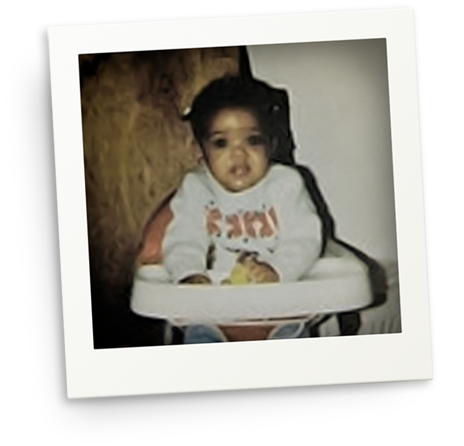
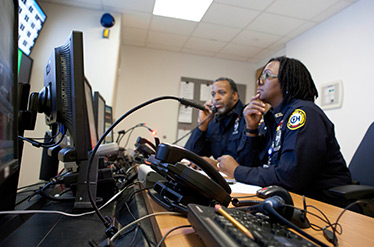

Code Amber
Our commitment to being the safest children’s hospital means ensuring that patients are secure in our facilities. All employees are responsible for ensuring children do not leave our facilities without our knowledge or without following correct procedures. The CODE AMBER procedure instructs employees at the Main Hospital campus on prevention measures and how to respond in the event a patient is found “missing” from the Hospital due to elopement or abduction. When a CODE AMBER notification goes out, consider checking areas where a patient might elope to: stair-towers, playrooms, cafeterias, family lounges, Connelly Center, etc.
Case Study: Carlina
The importance of the CODE AMBER procedure is highlighted by the following story.

Abducted as an infant, Carlina was just 19 days old in 1987, when she developed a fever and her parents brought her to Harlem Hospital. There, authorities say, they were comforted by a woman posing as a nurse. They left the hospital, but when they returned, their baby was gone.
For the next 23 years, the grief-stricken parents mourned the loss of their daughter, expressing they had lost a piece of themselves. Walking down a street, they’d spot a parent strolling with a child and wonder if the baby could be theirs.
In January of 2011, Carlina (renamed Nejdra Nance) was reunited with her parents and according to the FBI, the woman accused of kidnapping the baby and posing as her mother for 23 years, admitted to the crime claiming she was unable to have a child of her own.
Stories, like this one, are rare but help us see the importance of being aware of patient security and how to prevent missing children from our facilities.
Elopement
Elopement is when a patient leaves the Hospital without notification to Hospital staff and before one’s scheduled discharge. An example of elopement is a patient who may walk or run away.
Risk Factors to Watch For:
- Patients who lack understanding or insight into the importance of remaining in the hospital
- Patients who talk about leaving the hospital
- Patients who are angry, anxious, or upset
- Patients with a head injury or neurological disorder who exhibit poor impulse control and/or behavioral outbursts
- Patients with a history of running away from home, hospitals, or school
Abduction
Abduction is the unlawful removal of a patient from the Hospital against his or her will by someone other than the Patient’s Representative. An example of abduction is a stranger attempting to leave the building with someone else’s child.
Risk Factors to Watch For:
- Patients with social or family issues
- Infants younger than 6 months of age
- Patients awaiting foster placement
- Patient where parental custody is in dispute
Insist on identification. Patients, visitors including contractors, and employees should have proper identification at all times. Do not make exceptions.
Prevention
Reflect and Resolve
If you see a patient that isn’t with a staff member or adult, ask if they need help finding something. Also, be aware of door alarms. If an alarm is active, check the door, and contact Security at ext. 4-5500.
CHOP’s prevention measures or General Safety Measures include patient transport procedures, patient monitoring, identification, and security officers.
Transportation
Transportation prevention measures include:
- Proper ID is required to transport patients.
- When a patient is moved to another location, parents are encouraged to accompany them.
- Infants and young children are transported one at a time using appropriate conveyance, such as a bassinet, carriage, or stroller.
- Patients are never carried during transport.
- Patients are never left unsupervised in any areas of the Hospital.
Patient Monitoring
Patient monitoring includes:
- Patients under the age of 18 should be accompanied by a staff member, hospital volunteer or an adult family member when off the patient unit.
- Hospital staff and parents must notify the nurse when leaving the patient care area with a patient. Exceptions require planning and discussion with the patient or family and the health care team.
- For infant patients up to 3 months, a complete physical assessment of the baby must be documented in the medical record, including unique physical characteristics or findings, such as birthmarks or skin tags.
- In outpatient areas, parents/guardians should not leave children unattended while in the waiting room or relinquish that duty to others.
Identification
Identification measures include:
- Employee ID Badges: All employees wear a CHOP identification badge at all times. Children are only released into the care of employees with badges.
- Parent/Visitor ID: Parents and visitors, over the age of 18, are required to wear hospital-issued identification. The identification wristbands or parent pass must be worn at all times at the hospital.
These are some of the more common measures taken to make sure all people in our buildings are identified and have a rightful purpose.
Your Role
In Abduction Prevention
Many patients are at high risk for abduction.
Follow these guidelines:
- Do not place infants in rooms physically located next to stairwells or elevators.
- Give the greatest priority for room placement to children involved with custody or abuse issues.
- Notify Security and Social Work of a patient’s high-risk status.
- Place patient on constant observation.
In Responding to Elopement
If a patient verbalizes intent or you suspect a patient might leave:
- Place the patient on Constant Observation.
- Assess the elopement risk.
- Use resources.
- Develop a plan to prevent elopement.
- Notify Security with a description of the patient and the potential for patient elopement.
If a patient attempts to leave the unit/hospital:
- Place the patient on Constant Observation.
- Talk to the patient and provide age-appropriate direction regarding what they must do.
- Contact Security if the patient continues to attempt to leave.
If a patient attempts to leave the CHOP campus:
- Pursue the patient to Hospital or campus boundaries.
- Attempt to escort the patient back to the building.
- Supervise the patient until preventive measures are in place.
- Contact Security, treatment team, and the family or guardian.
In Abduction Emergency
If a patient is being taken from the unit/Hospital or campus:
STOP
Firmly say or yell, “STOP!” Make a verbal effort to stop the abductor.
ALERT
Immediately call Security at ext. 4-5500, communicate fire tower and brief description of abductor and patient.
FOLLOW
Maintain a visual on the child/abductor until Security arrives.
KEEP YOUR DISTANCE!
Code Amber Protocol
When CODE AMBER goes into effect, there are two levels of protocol.
Level 1
All staff are notified via ASCOM phones by the Security Command Center of the description of the patient and last known location.
What you do:
Report a child missing to Security immediately at ext. 4-5500.
What will happen:
- Command Center monitors cameras or alarms
- Security and staff search unit or area
- Security and staff block main entrances and exits
- Staff work together to determine if abduction or elopement has occurred
- Unit or area staff is interviewed (inquiry regarding visitors to the missing patient)

Level 2
At this level, call 911 and cordon off the room for a police investigation. All communication to staff is handled in Level 1 protocol.